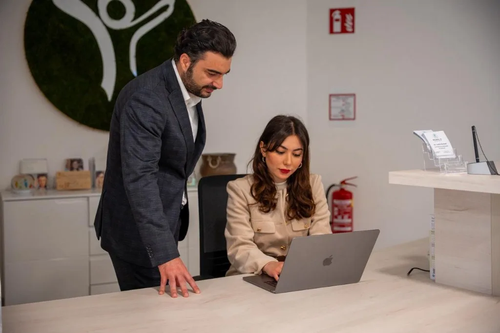
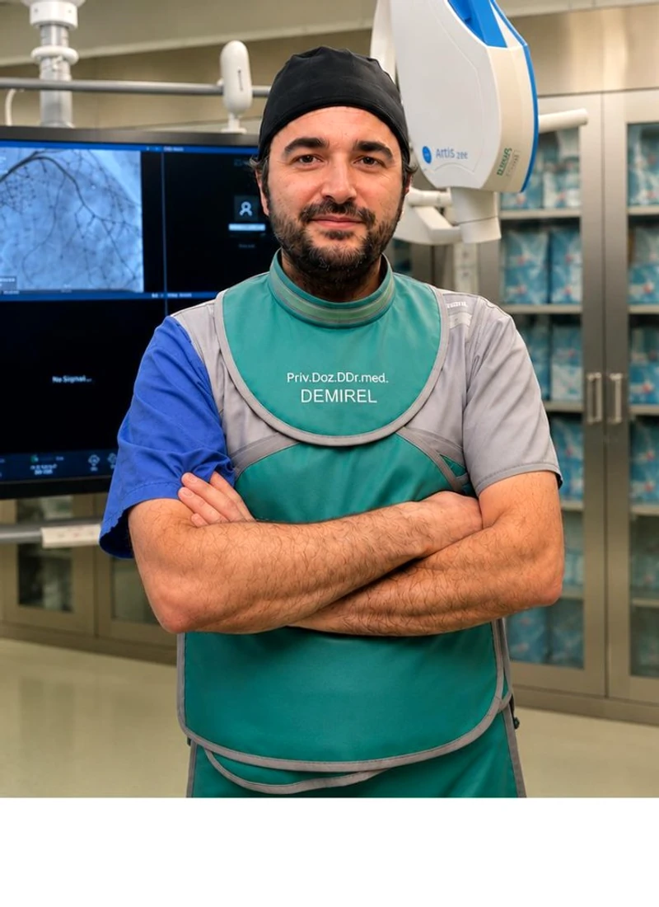

Priv.-Doz. Dr. med. Caglayan Demirel
أخصائي الباطنية والقلب
التخصصات:
- طب القلب التداخلي والهيكلي
- تشخيص وعلاج قسطرة القلب
- علاجات صمام القلب عبر القسطرة
عيادة خاصة
بموعد
طبيب القلب بخلفية جامعية وبحثية – في العيادة الخاصة لخدمتكم.
لماذا نحن؟
د. ديميريل يعمل في جامعة فيينا الطبية ومستشفى فيينا العام (AKH)، متخصص في طب القلب التداخلي والهيكلي وTAVI وعلاج صمام القلب. في العيادة الخاصة يمكنكم الحضور بموعد دون إحالة.
التركيز السريري
- زرع الصمام الأبهري عبر القسطرة (TAVI)
- علاج صمام القلب بطريقة طفيفة التوغل
- أمراض القلب الهيكلية
- علاج أمراض الصمام الأبهري المعقدة
- تقسيم المخاطر ومضاعفات ما حول العملية
عن الدكتور
الأستاذ المساعد د. د. جاغلايان ديميريل أخصائي باطنية مع تخصص إضافي في القلب (التركيز: القلب التداخلي والهيكلي). يعمل في جامعة فيينا الطبية ومستشفى فيينا العام (AKH) ويدير عيادة خاصة في Gesundheitspark فيينا.
معلومات شخصية
Priv.-Doz. DDr. Caglayan Demirel
البريد: caglayan.demirel@meduniwien.ac.at
ORCID: 0009-0001-1966-0637
الترقية الأكاديمية (هابيليتاسيون)
أستاذ مساعد في الباطنية · 05.05.2025 · جامعة فيينا الطبية
المنصب الحالي
أخصائي باطنية مع تخصص إضافي في القلب
التركيز: القلب التداخلي والهيكلي · منذ 01.10.2022 – مستشفى فيينا العام (AKH)، جامعة فيينا الطبية، تحت إشراف البروفيسور كريستيان هينغستنبرغ.
التدريب والمسار المهني
- زمالة القلب التداخلي والهيكلي · 04/2020 – 09/2022 · إنزلسبيتال برن
- أخصائي باطنية · 07/2019 – 03/2021 · مستشفى سانت يوهان في تيرول
- دبلوم طوارئ · 12.04.2019
- دراسة الطب · 2007–2013 · جامعة إنسبروك · د. med. univ. 22.06.2013
- ثانوية علوم · 2003–2007 · سانت يوهان في تيرول
العضويات
- الجمعية النمساوية لطب القلب
- الجمعية النمساوية للباطنية
- الجمعية الألمانية للباطنية
البحث
يركز بحث د. ديميريل على نتائج علاجات صمام القلب الحديثة. منشوراته في مجلات دولية مثل European Heart Journal وJAMA Network Open وEuroIntervention.
الجوائز
باحث الشهر 05/2025
جامعة فيينا الطبية
جائزة للإنجاز العلمي المتميز.
أستاذ مساعد في الباطنية (venia docendi)
05.05.2025 · جامعة فيينا الطبية
الترقية الأكاديمية (هابيليتاسيون).
محاضرات مدعو إليها
- محاضر مدعو (مكرم): Boston Scientific Austria، Edwards Lifesciences، Cordis، MEDahead
منح تعليمية وسفر
- Educational Grant (Edwards Lifesciences، Boston Scientific) · Travel & Training Grant (Biotronik)
فيديو
الانتماء الأكاديمي
جامعة فيينا الطبية
قسم طب القلب
مستشفى فيينا العام (AKH)